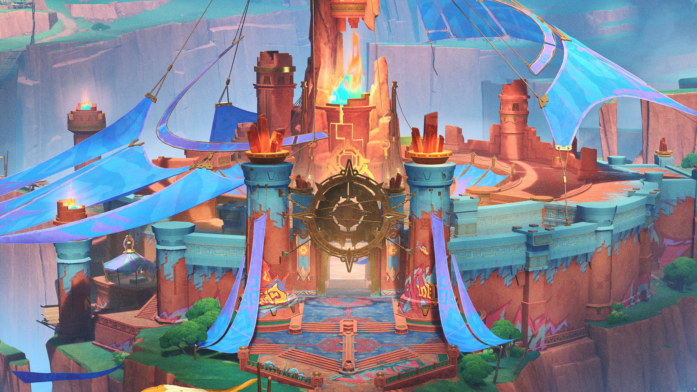

Tepecac Stadium
A great open arena where the people of Natlan gather for contests, performances, and festivals. The stadium is busiest during celebrations, when the crowd fills the stone seats and the sound carries across the valley.
Best for: Festivals